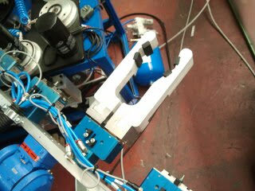

Appunti di automazione · novembre 2026
Ho visto un'isola di pallettizzazione che andava come un orologio, e un magazzino automatico pure. In mezzo, sei pallet in coda sulla rulliera di uscita. Il pallettizzatore produceva, il trasloelevatore era libero, e nessuno dei due sapeva che l'altro esisteva: la missione di prelievo la creava a mano l'operatore, a fine turno, leggendo le etichette una a una. Due macchine perfette e un confine presidiato da un uomo con un terminale. Il problema, quasi mai, è la meccanica. È la conversazione.
Tra il PLC dell'isola e il WCS del magazzino non serve un cavo più grosso: serve un linguaggio più povero e più preciso. Le specifiche che leggo sono elenchi di quaranta, sessanta bit: «per sicurezza, scambiamoci tutto». Quelle che funzionano stanno in quattro segnali veri, un'identità leggibile e un handshake che dice la verità sullo stato delle cose. Il resto è nebbia che qualcuno dovrà mantenere.

Il primo segnale è il più ovvio e il più tradito: pallet pronto. Non «la macchina sta lavorando», ma «il ciclo è chiuso, il carico è completo, filmato, stabile, nella baia di uscita». Ho visto un bit di pronto che restava alto a baia mezza vuota, legato al consenso del nastro, non alla fine del ciclo: il trasloelevatore arrivava, trovava mezzo pallet e tornava a vuoto — un ciclo di entrata e uscita perso per tutti.
Poi il consenso al contrario: il magazzino che dice «posso venire a prenderlo», perché baia e trasloelevatore potrebbero essere occupati. Terzo: la missione, assegnata e poi dichiarata compiuta con la destinazione, così produzione e giacenza chiudono sullo stesso numero. Quarto, l'allarme, ma con un codice: di carico (sagoma fuori profilo, pallet danneggiato), di baia, di comunicazione. Un bit unico «allarme generico» costringe qualcuno a camminare fino alla macchina per scoprire che era un'etichetta storta. In un impianto ne ho contati ventisette, e cinque letti davvero: gli altri ventidue erano lì «per il futuro» — e il futuro, in automazione, è il nome dei bit che nessuno collauda.
Il modo più fragile di dirsi le cose è l'impulso: un bit che sale per duecento millisecondi e significa «fatto». Se in quei duecento millisecondi il WCS sta riavviando o il PLC è in stop per un cambio programma, il messaggio è perso e le due macchine restano convinte di cose diverse. L'handshake fatto bene ha degli stati: il WCS scrive la missione — identità del carico, baia di prelievo, destinazione — il PLC la riconosce, la esegue, la dichiara completata con un codice di esito: richiesto, riconosciuto, in esecuzione, completato — quattro stati che valgono più di quaranta bit.
E c'è il watchdog, il battito che i due sistemi si scambiano. Ma dimostra solo che il canale respira, non che la coda delle missioni si muove. Ho visto un WCS tranquillo perché il battito arrivava puntuale, mentre la missione numero 204 veniva eseguita dal PLC due volte: una prima dell'interruzione e una dopo, rispedita al riavvio come fosse nuova. Risultato: un pallet prelevato due volte nella testa del sistema e una cella che non tornava più. La regola che lo evita è noiosa e assoluta: un solo scrittore per ogni campo, un'identità stabile per ogni missione, e un riavvio non deve mai trasformare un comando vecchio in uno nuovo. È lo stesso principio del buffer dimensionato in minuti: là i flussi dei colli, qui le decisioni — perché un disturbo non diventi un fermo, o un fantasma, dall'altra parte.
Tutto l'handshake del mondo non serve se il carico è anonimo. Il magazzino automatico ragiona per identità: quel nome nasce in linea, a fine ciclo, quando l'etichetta viene stampata e applicata sul pallet finito, e ogni unità di carico deve averne uno leggibile da una macchina. Il codice più usato è l'SSCC, diciotto cifre che identificano il collo; alla stazione di identificazione all'ingresso, un lettore di codice a barre lo legge e il WCS abbina il corpo fisico alla sua scheda: articolo, lotto, quantità, data. Se la lettura fallisce, il pallet si ferma in baia di controllo e — dettaglio che si scopre di venerdì sera — qualcuno deve andarci a piedi.
Mi è capitato un pallet entrato senza lettura, stoccato a mano dal carrellista in una posizione libera e mai registrato: per il WMS era ancora in produzione, per la produzione era già spedito. Una notte di inventario per ritrovarlo, tre corsie più in là. Da allora la penso così: l'identità non è un accessorio dell'interfaccia, è la prima riga del contratto. Senza, i segnali dicono che qualcosa si è mosso, ma nessuno sa cosa.
Ci sono impianti dove l'interfaccia tra isola e magazzino è una persona: l'operatore trascrive il lotto in un foglio condiviso e il magazziniere crea la missione quando passa. Funziona? Finché i ritmi sono da turno tranquillo e le persone sono sempre le stesse, sì. Poi arriva il picco: un pallet ogni quarantacinque secondi, la rulliera di uscita ne tiene sei, il foglio viene aggiornato ogni mezz'ora — e l'isola si blocca con l'uscita piena (il magazzino, nel frattempo, è fermo senza missioni: affamato e bloccato nello stesso impianto, cinquanta metri più in là). E c'è l'errore di trascrizione, che non fa rumore: un lotto digitato male non ferma niente, spedisce il prodotto sbagliato.
Il punto non è che Excel sia il nemico: un'interfaccia manuale ha due difetti strutturali — la latenza, il dato che arriva dopo il corpo, e l'assenza di stati: nessuno sa se la missione è stata vista, presa in carico, chiusa. In un impianto piccolo si può vivere così; ma è un presidio umano permanente, e va messo a budget, non spacciato per integrazione.
Se dovessi scriverla su un foglio solo, e a volte l'ho fatto, metterei questo. L'identità del carico, l'SSCC, che non si negozia. Il contenuto in tre campi: articolo, lotto, quantità — quelli che servono al WMS per decidere dove va il pallet. La sagoma e il peso, almeno per classe: trasloelevatore e rulliere devono sapere se quel carico possono prenderlo. Lo stato del carico: completo o parziale, conforme o da controllare. E la missione con il suo esito, negli stati veri detti sopra. Ogni dato in più deve superare un esame: cambia una decisione a valle? Se no, è rumore che occupa banda e manutenzione.
Dipende dal livello del magazzino: con un semiautomatico si può scambiare anche meno; con MES e tracciabilità spinta si scambierà di più, via Industrial Ethernet. Ma l'ossatura non cambia: quattro segnali onesti, un handshake che non mente, un nome per ogni pallet. Il pallettizzatore e il magazzino non devono parlarsi tanto. Devono parlarsi giusto — e quando uno dei due si ferma, l'altro deve saperlo dal filo, non dal silenzio in corsia.